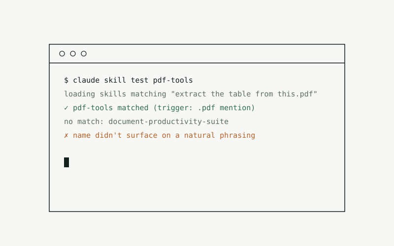
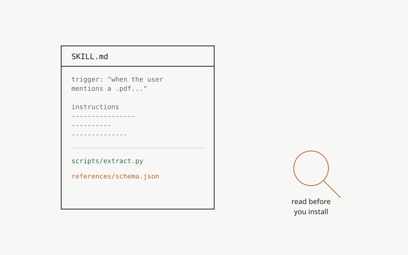
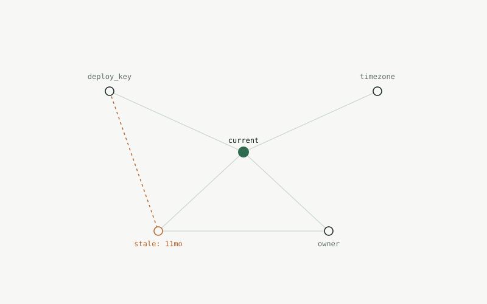
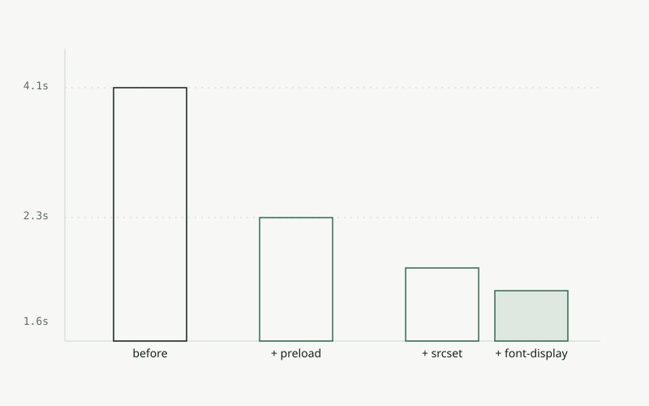

a field notebook, kept in public
Notes from keeping things running.
Short, specific write-ups on making websites faster and making AI agents more reliable — the kind of note you'd leave yourself so you don't solve the same problem twice.
What you'll find here
- web performance
- Concrete fixes for load time, layout shift, and the other things that make a site feel slow — with before/after numbers, not theory.
- agent reliability
- What makes an AI agent's memory and context trustworthy across sessions, instead of quietly drifting.
- agent skills
- How to write a skill or tool definition an agent will actually reach for at the right moment, not just the one that reads well.
Recent notes
-

How to add skills to OpenAI Codex A skill is a folder with a SKILL.md file. Here is where it goes, how to install one, and how to check that Codex actually sees it. -

Inside a skill: what you're actually installing A catalog makes adding a skill feel like a package install. The file you get is closer to a small program with instructions attached. - Writing a skill your agent will actually use The failure mode is not that the skill is wrong. It is that the agent never reaches for it.
-

Give your agent memory it can trust Most agent memory fails quietly. Here is what actually holds up across sessions. -

Cut your LCP in an afternoon Three changes that moved a real site from 4.1s to 1.6s, in order of effort.
About this log
Uptime is one person's running notes on two kinds of systems: the websites that serve people, and the agents that act on their behalf. Entries go up when something was worth fixing and worth writing down — not on a schedule.